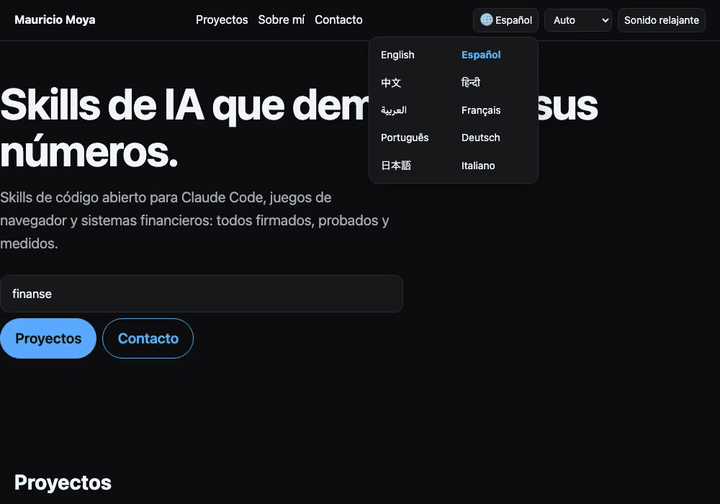

2 اسکیل
مهندسی ایجنت
اسکیلها و گردشکارهایی که ایجنتها بارگذاری و دنبال میکنند، در قالب پلاگین Claude Code و یک GitHub Action.
توسعه · ایجنتهای هوش مصنوعی، اتوماسیون، SaaS
اسکیلها و گردشکارهای ایجنت برای Claude Code طراحی میکنم، با eval میسنجم، برای انتشار مقاومسازی میکنم و از صفر تا صد تحویل میدهم.
2 اسکیل
اسکیلها و گردشکارهایی که ایجنتها بارگذاری و دنبال میکنند، در قالب پلاگین Claude Code و یک GitHub Action.
96% در برابر 50%
اول eval، بعد ادعا. در 11 تست وضعیت، adhd-status امتیاز 96% میگیرد؛ همان مدل بدون آن 50%. هزینه هر گزارش وضعیت را هم 35% کم میکند.
7.4 Scorecard
نسخههای امضاشده و قابل راستیآزمایی و OpenSSF Scorecard روی همه مخازن. ایجنت خودم هر فراخوانی ابزار را پیش از اجرا با یک سیاست امنیتی میسنجد.
100/100
از ایده تا عرضه: مستندات، CI، انتشار نسخهها و دو بازی آنلاین که همین حالا هر کسی میتواند بازی کند.
اسکیل ایجنت · Claude Code
دیسکی پر، خالی شد؛ بیآنکه چیزی از دست برود.
اول اندازه میگیرد، چیزهایی را که دیسک را پر کردهاند با یک پاسخ ساده «لازمش داری؟» رتبهبندی میکند و قدمبهقدم پیش میرود. هیچ چیز بدون تأیید شما پاک نمیشود.

اسکیل ایجنت · GitHub Action
مخازن شما، تبدیل به پورتفولیویی که دیده میشود.
مخازن عمومی GitHub شما را میخواند، صفحه را فقط با واقعیتها و همراه خودتان مینویسد و پس از تأیید شما روی GitHub Pages منتشر میکند: سئو، 10 زبان، 8 تم، جستجوی مقاوم در برابر غلط تایپی، بدون ردیاب.

اسکیل ایجنت · GitHub Action
شما ساختیدش. اسم شما رویش.
هر جایی که یک ابزار هوش مصنوعی اسمش را روی کار شما گذاشته پیدا میکند، در مخازن، حساب GitHub و تنظیمات ابزارهای هوش مصنوعیتان؛ هر کدام را با تأیید شما خاموش میکند و یک هوک نصب میکند که جلوی اعتبارگذاری جدید هوش مصنوعی را میگیرد. یک GitHub Action هم هست که هر pull request حاوی آن را رد میکند.

اسکیل ایجنت · Claude Code
داده را انتخاب کن. تمیز تحویل بگیر. به چیزی دست نزن.
یک خزنده داده فقطخواندنی برای Claude Code. یک پیشتنظیم (متن، جدول، لینک، قیمت، محصول، مقاله) انتخاب کنید یا یک اسکیما بنویسید؛ سایت را پیمایش میکند، وضعیتهای اپهای تکصفحهای را نقشهبرداری میکند و رکوردهای تمیز برمیگرداند. به robots.txt احترام میگذارد، بین درخواستها یک ثانیه صبر میکند و جلوی هر عملیات نوشتن را میگیرد.

اسکیل ایجنت · GitHub Action
واقعاً تمام شده؟ در خود اپ ثابتش کنید.
اسکیلی برای Claude Code که ثابت میکند یک تغییر در اپِ در حال اجرا کار میکند. اپ خودتان را در Chrome بدون رابط باز میکند، مثل یک کاربر کلیک و تایپ میکند و هر ادعا را روی صفحه زنده میسنجد: قبول، رد یا نامشخص، همراه با اسکرینشات. فقط روی دستگاه خودتان اجرا میشود: بدون تلهمتری، بدون ابر، بدون حساب کاربری.

اسکیل ایجنت · GitHub Action
توکنهایتان را پیش از compact بشناسید.
یک توکنشمار زنده و فقطخواندنی برای Claude Code: کانتکست هر جلسه چقدر پر است، چند نوبت تا auto-compact مانده، هشدار کش سرد و سرورهای MCP و اسکیلهایی که هرگز صدا نمیزنید. حالت advise پیشنهاد میدهد چه چیزی را کم و بهتر کنید: compact، شروع تازه، کوتاهسازی، برنامهریزی و ساخت با مدلهای متفاوت، یک مدل محلی، یک اسکیل جدید. آفلاین اجرا میشود: بدون تلهمتری، بدون هوک، بدون ویرایش تنظیمات.
تازه در v0.5.0: هزینه هر CLAUDE.md، قاعده و سرآیند اسکیل در هر فراخوانی، یک شمارنده در نوار وضعیت و توکنهایی که هر کاهش صرفهجویی میکند.

خلاقیت · توسعه پلاگین
روی چیزی بسازید که از قبل کار میکند.
آزمایشی بازیگوشانه با روشی جدی: خلأ یک محصولِ جاافتاده را پیدا کن و قابلیت را با یک پلاگین کوچک و تستشده اضافه کن. اینجا: پیامهای LinkedIn که خودشان را به 💬💣💨 منفجر میکنند. همین رویکرد برای هر ابزاری که تیم شما استفاده میکند جواب میدهد: CRM، ERP، میز پشتیبانی، پورتال داخلی.
RANSA
یک سیستم تیکتینگ هلپدسک تا هر درخواست ثبت، واگذار و بهموقع بسته شود.
صورتحساب AS400
پایدارسازی و تست فرانتاند بصری یک سیستم صورتحساب که روی AS400 اجرا میشود.
Gestiona
ساخت دادههای مرجع مشتریان و تأمینکنندگان تا فروش و خرید از یک منبع واحد کار کنند.
خدمات املاک
پیشفاکتور خدمات مدیریت املاک، بر اساس یک تماس یا تحلیل ملک.
ICC
سایتی ماژولار که تیم میتواند صفحهبهصفحه و بدون برنامهنویس گسترشش دهد.
اتوماسیون
روالهای اکسلی و کارهای کپیپیست تبدیل به گردشکارهای زمانبندیشده با کنترل، تا آدمها دیگر کار ماشین را انجام ندهند.
داده
دادههای حسابداری، حقوق و دستمزد، CRM و گرنت در یک دیتا لیک یکپارچه، با داشبوردهایی که برای پرسشهای شما ساخته شدهاند، نه از روی قالب.
نرمافزار
وباپهای کوچک و ایجنتهای هوش مصنوعی، از صفر تا صد، با تست، CI و نسخههای امضاشده.
پاکسازی
ابزارهای تکراری، نسخههای اضافی داده و حفرههای دسترسی حذف میشوند؛ پس هزینه کمتر و راه نفوذ کمتر.
16h → 3h
برنامهریزی تخصیص حقوق در یک سازمان غیرانتفاعی چندبرنامهای، خودکار شده و با کنترل مانده گرنت در دل آن.
−70%
یک سیستم تیکتینگ میانبخشی که در Ransa طراحی کردم؛ هزینه نگهداری حدود 20٪ کاهش یافت.
−30%
بازطراحی فرایند پرداخت و یک ابزار CRM و پیشفاکتور در اکسل در Gestiona365.
96% در برابر 50%
adhd-status، اسکیل متنباز من، در 11 تست وضعیت امتیاز 96% میگیرد؛ همان مدل بدون آن 50%.
Python · SQL · Power BI · Tableau · Excel · JavaScript · GitHub Actions · Claude Code · Codex · Cloudflare
استخدام
موقعیتهای تماموقت یا قراردادی در حوزه ایجنتهای هوش مصنوعی، ابزارهای توسعهدهنده و اتوماسیون؛ دورکاری یا از ورمانت، آمریکا.
مشاوره
بررسی میکنم تیم شما چطور از ایجنتهای کدنویسی استفاده میکند، میسنجم زمان و هزینه کجا میرود و یک فهرست کوتاه و اولویتبندیشده از اصلاحات تحویل میدهم.
مشاوره
اسکیلهای ایجنت متناسب با گردشکار شما، با eval، نسخههای امضاشده و بررسیهای امنیتی؛ آماده نصب برای تیمتان.
بگویید ایجنتهایتان باید چه کار کنند. من میگویم چطور آن را میسازم، تست میکنم و ثابت میکنم که کار میکند.